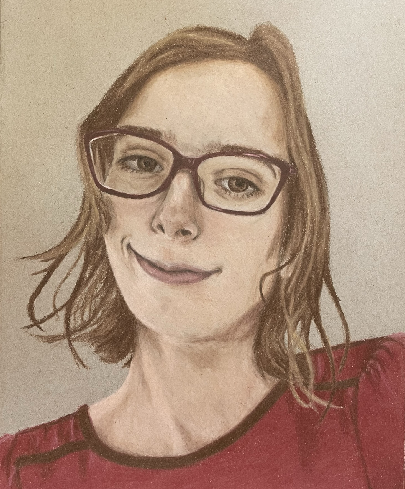

I am a NSF postdoc in the mathematics department at UCSD, working under Rayan Saab. Prior to this, I was a Ph.D. student in applied mathematics at UCLA, where I was advised by Deanna Needell. My pronouns are they/them.
You can reach me at ----@ucsd.edu by replacing ---- with e2george.
My main research interest is machine learning, particularly in regards to theory and issues of bias and fairness. An up-to-date collection of my papers is available on my Google Scholar page.
If needed, here is my PGP public key.
Another picture of me.